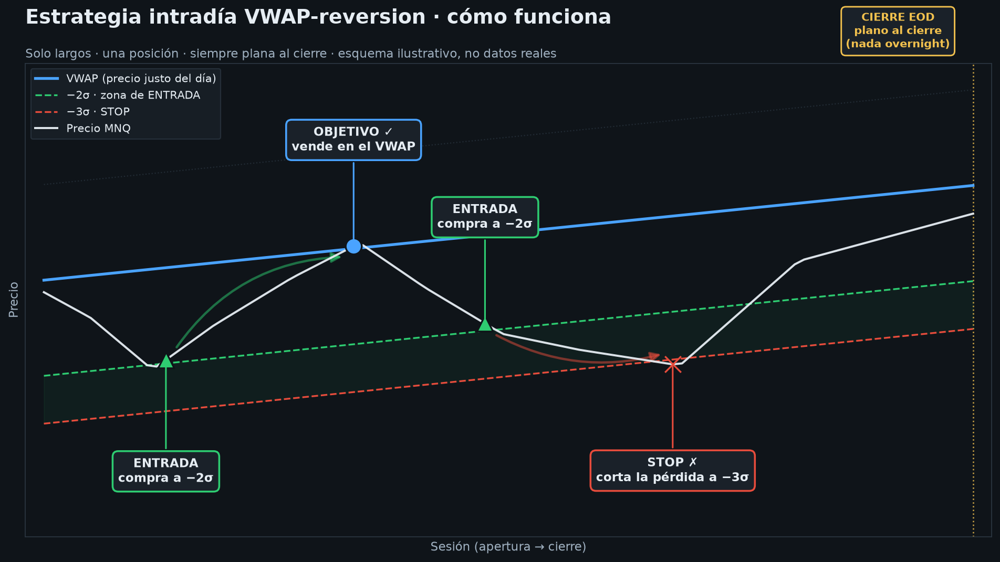

VWAP-reversion sobre micro-futuro del Nasdaq (MNQ)
🎯Qué es y cómo funciona
Reversión a la media intradía: cuando el precio se aleja demasiado de su valor
"justo" del día (el VWAP, precio medio ponderado por volumen), apuesta a que volverá.
Solo posiciones largas, una a la vez, y siempre plana al cierre (intradía puro).
Entradael precio cae a −2,5σ por debajo del VWAP → compra
Objetivoel precio vuelve al VWAP → vende con beneficio
Stopbaja 1σ más (a −3,5σ) → corta la pérdida
Cierre EODal final de la sesión se liquida sí o sí (nada overnight)
σ = volatilidad del día medida sobre la marcha.

Esquema ilustrativo (no datos reales): una operación ganadora (vuelve al VWAP) y una perdedora (salta el stop).
📈Sobre qué instrumento
Se opera: MNQ — Micro E-mini Nasdaq-100 (CME), futuro apalancado micro (2 $/punto). Ideal para cuenta pequeña.
Se validó sobre: NQ (el E-mini grande, mismo índice) por tener 16 años de histórico limpio. Mismos precios, solo cambia el tamaño.
🔬Cómo se validó
16 años de datos reales (Databento, 2010–2026). Método honesto: configuración elegida
solo con 2010–2019 y medida en 2020–2026 intactos.
7/7
años out-of-sample positivos
+0,19R
expectancy por operación
1,16
profit factor
1,27
Sharpe diario
Stress-test: aguanta hasta 4 ticks de slippage + comisiones altas sin perder el edge.
🤖Qué pasa automáticamente
Una tarea de Windows (PaperVWAP_MNQ) ejecuta el sistema cada 5 min, L–V de 15:30 a 22:30 (hora española).
Baja las velas de hoy de IBKR, calcula VWAP y desviación, y comprueba si hay señal.
En cada entrada o salida te avisa por WhatsApp y lo registra en el journal (paper_vwap_journal.csv).
Todo es PAPEL (simulado): no manda órdenes reales, no se mueve dinero.
🗓️Sistema operativo · qué corre y cuándo
Todo son tareas programadas de Windows que se ejecutan solas. Instrumento operado:
MNQ · front-month — el script resuelve automáticamente el contrato vigente (rota solo en cada vencimiento).
Tarea
Cuándo
Qué hace
PaperVWAP_MNQ
L–V, cada 5 min 15:30–22:30
Ejecuta la señal sobre MNQ; avisa por WhatsApp en entradas/salidas
PaperResumen_VWAP
L–V, 22:15
Resumen del día (métricas + curva equity) → Telegram + WhatsApp
BridgeWatchdog
cada 15 min
Revive el bridge de WhatsApp si cae; avisa por Telegram si TWS cae en mercado
BridgeRestart_Daily
06:00
Reinicio preventivo del bridge (evita el cuelgue "500")
TWS Auto-Restart
05:00
TWS se reinicia manteniendo la sesión (sin re-login)
Trading-Alertas / Resumen
9 / 12 / 18 h
Cartera DCA: alertas ±2% y resumen diario (Telegram + WhatsApp)
Avisos de operación: solo entrada y salida (MANTENER y "sin señal" son silenciosos, no hay spam).
🙋Qué tienes que hacer tú
Tener TWS abierto con sesión iniciada y la API en el puerto 7496. El auto-restart de las 05:00 se encarga del mantenimiento diario.
Revisar los domingos por la noche que TWS sigue logueado — el reseteo semanal de IBKR puede pedir 2FA en el móvil (lo único que no se automatiza).
Leer los avisos (WhatsApp en operaciones · resumen a las 22:15). Para ver el detalle: paper.bat resumen.
Nada de dinero — sigue en validación en papel.
🗺️En qué fase estamos
Fase
Estado
Validar el edge histórico (7/7 años)
✅ hecho
Robustez a costes / slippage
✅ hecho
Paper-trading en vivo
🔄 en marcha ahora
Confirmar fill-realism (¿se llenan las órdenes?)
⏳ solo el papel lo dirá
Fondear cuenta y pasar a real (~8–15k$)
⏳ pendiente
Auto-ejecución vía IBKR (paper 7497 primero)
⏳ fase final
⚠️Avisos honestos
Edge fino: profit factor 1,16. Real pero modesto — no te hará rico rápido.
Win rate ~35%: aciertas 1 de cada 3 veces; ganas porque los aciertos son mayores que los fallos. Duro psicológicamente (por eso es automático).
Drawdowns: con 1 MNQ el peor bajón histórico fue −4.580 $. Por eso 2.000 € es insuficiente; suelo ~8.000 $, ideal 12–15k.
Lo que el backtest no sabe: si tus órdenes se llenan de verdad en vivo. Eso es lo que el paper-trading mide ahora.
En una frase: un robot en papel compra micro-Nasdaq (MNQ) cuando se desploma respecto
a su media del día y lo vende al recuperar, avisándote por WhatsApp; tú solo tienes que tener
TWS abierto y observar, sin arriesgar dinero, hasta que el papel confirme que funciona en vivo.